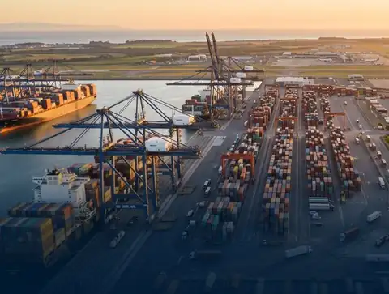
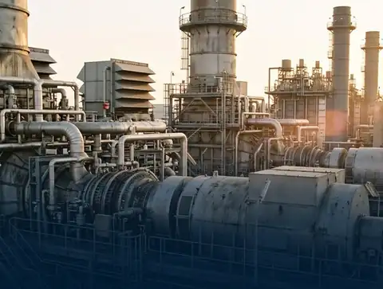
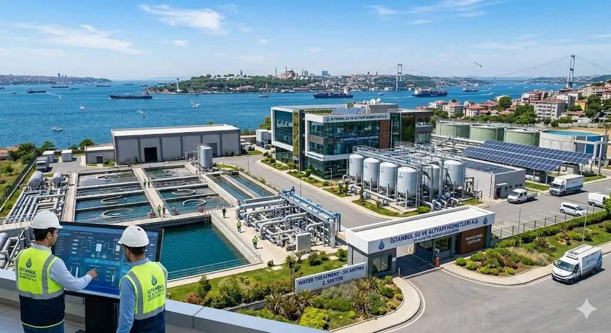
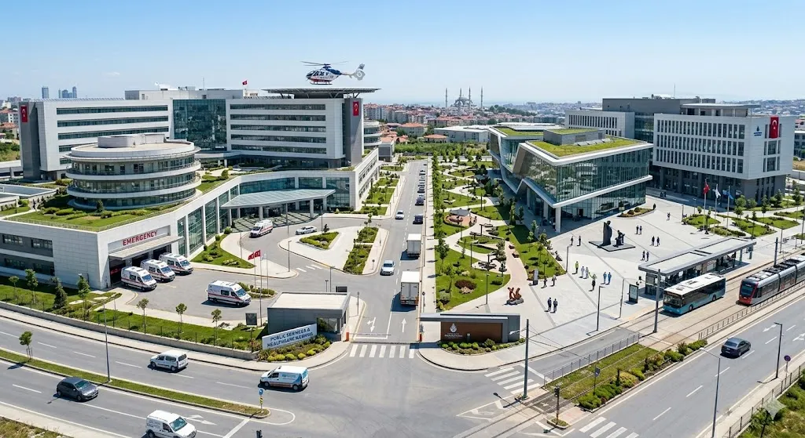

Setores
Setores de capital intensivo, públicos e privados.
Apoiamos setores de capital intensivo em que a bancabilidade depende da clareza técnica, do rigor no aprovisionamento, de contratos fiáveis e de estruturas de financiamento de longo prazo.
Infraestruturas & transportes

Portos & aeroportos

Centrais energéticas

Instalações industriais

Água & serviços públicos

Saúde & edifícios públicos